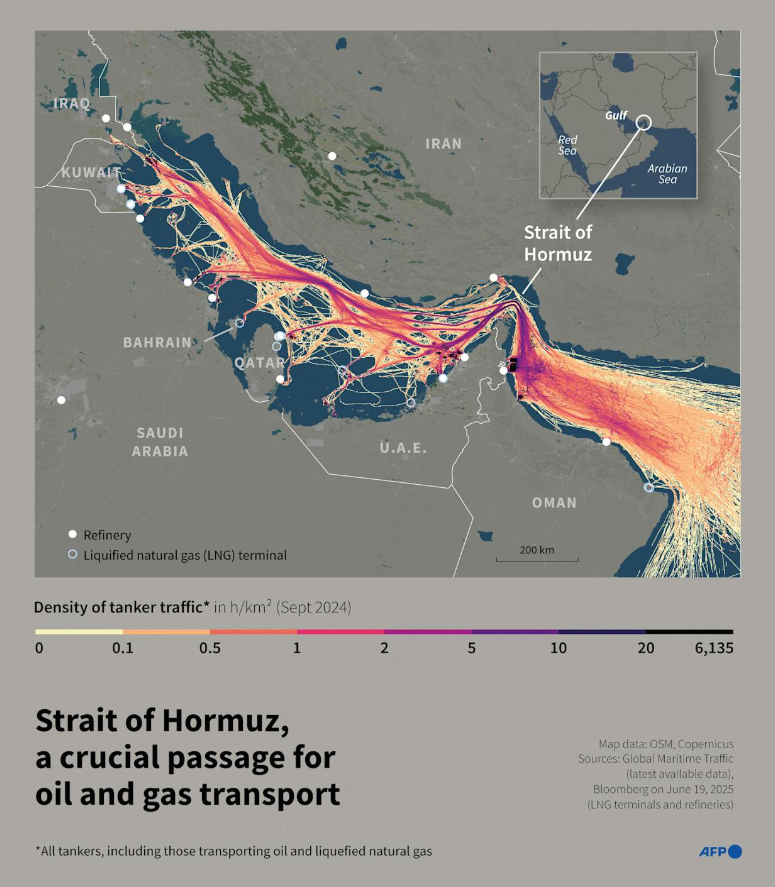
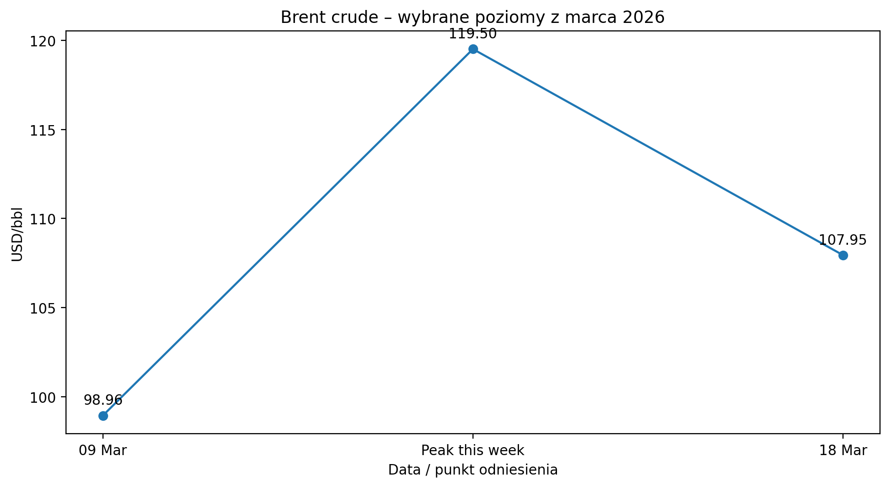
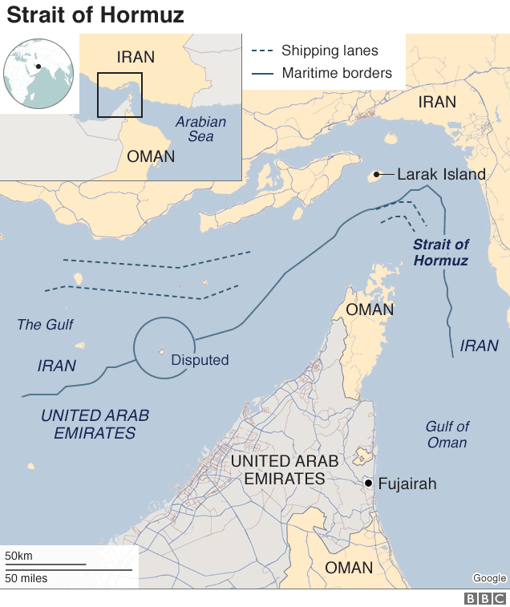
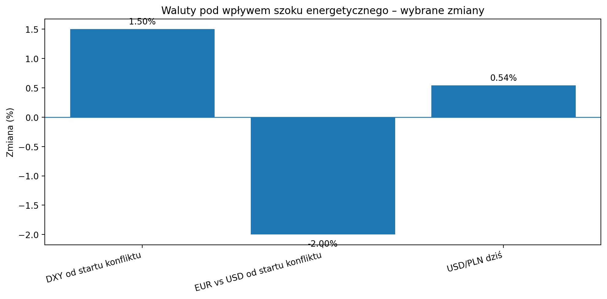
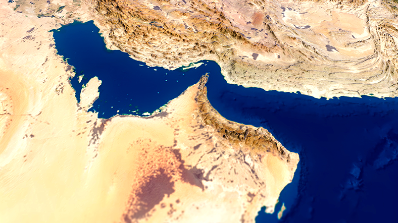

Agro pod presją energii. Ormuz, ropa, dolar i nowa fala nerwowości na rynkach

Światowe rynki weszły w fazę, w której o cenach zbóż, oleistych i walut coraz mocniej nie decydują już tylko klasyczne fundamenty podaży i popytu, ale przede wszystkim geopolityka energii. Dziś centrum tego napięcia jest rejon Cieśniny Ormuz – kluczowego wąskiego gardła dla globalnego handlu ropą i LNG. To właśnie tam koncentruje się ryzyko, które podbija ceny energii, zwiększa premię za niepewność na surowcach agro i jednocześnie wzmacnia dolara. Według EIA przez Ormuz przepływało w 2024 r. około 20 mln baryłek ropy dziennie, czyli ok. 20% światowej konsumpcji płynnych paliw, a IEA wskazuje też na ogromne znaczenie tej trasy dla LNG. W marcu 2026 Reuters opisuje faktyczne ograniczenie ruchu i szybkie przekierowywanie części eksportu przez alternatywne rurociągi Arabii Saudyjskiej i ZEA.
Z punktu widzenia rynku najważniejsze jest to, że ropa znów stała się nośnikiem globalnego strachu. Brent 18 marca skoczył do 107,95 USD/bbl, a ceny utrzymują się powyżej 100 USD już czwartą sesję z rzędu. Wcześniej rynek widział nawet okolice 119,50 USD/bbl. To nie jest tylko epizod spekulacyjny. To sygnał, że inwestorzy zaczęli wyceniać realne ryzyko zakłóceń w fizycznych dostawach energii, wyższych kosztów frachtu, ubezpieczeń i logistyki. Nawet jeśli część baryłek da się ominąć przez Morze Czerwone czy terminale poza Ormuzem, sama niepewność wystarcza, by koszt energii wrócił na pierwszy plan w globalnym bilansie inflacyjnym.
Z punktu widzenia rynku najważniejsze jest to, że ropa znów stała się nośnikiem globalnego strachu. Brent 18 marca skoczył do 107,95 USD/bbl, a ceny utrzymują się powyżej 100 USD już czwartą sesję z rzędu. Wcześniej rynek widział nawet okolice 119,50 USD/bbl. To nie jest tylko epizod spekulacyjny. To sygnał, że inwestorzy zaczęli wyceniać realne ryzyko zakłóceń w fizycznych dostawach energii, wyższych kosztów frachtu, ubezpieczeń i logistyki. Nawet jeśli część baryłek da się ominąć przez Morze Czerwone czy terminale poza Ormuzem, sama niepewność wystarcza, by koszt energii wrócił na pierwszy plan w globalnym bilansie inflacyjnym.

Dla rynków agro oznacza to kilka kanałów presji naraz. Po pierwsze, droższa ropa natychmiast podnosi znaczenie sektora biopaliw, a więc wzmacnia oleje roślinne, przede wszystkim sojowy, palmowy i rzepakowy. Po drugie, wyższe koszty energii i transportu podnoszą koszt całego łańcucha dostaw – od przerobu po eksport. Po trzecie, wraca obawa o nawozy, bo napięcie energetyczne na Bliskim Wschodzie uderza również w gaz i w ekonomikę produkcji nawozów azotowych. To nie zawsze musi oznaczać natychmiastowy pionowy wzrost cen zbóż, ale niemal zawsze zwiększa zmienność i utrudnia spokojną wycenę rynku przez odbiorców paszowych, młyny i handel.
Najbardziej widać to obecnie w kompleksie oleistych. FAO podała, że jej indeks cen olejów roślinnych wzrósł w lutym o 3,3% miesiąc do miesiąca i osiągnął najwyższy poziom od czerwca 2022 r. Wzrost dotyczył palmowego, sojowego i rzepakowego. To ważne, bo pokazuje, że rynek olejów był napięty jeszcze zanim marcowy szok geopolityczny na dobre rozlał się na ceny energii. Innymi słowy: ropa nie podniosła rynku z niskiej bazy, tylko dołożyła kolejną warstwę paliwa do już relatywnie mocnego segmentu olejów roślinnych. W takim otoczeniu rzepak i canola pozostają szczególnie wrażliwe na każdy sygnał z rynku paliw, biodiesla i importu.
Najbardziej widać to obecnie w kompleksie oleistych. FAO podała, że jej indeks cen olejów roślinnych wzrósł w lutym o 3,3% miesiąc do miesiąca i osiągnął najwyższy poziom od czerwca 2022 r. Wzrost dotyczył palmowego, sojowego i rzepakowego. To ważne, bo pokazuje, że rynek olejów był napięty jeszcze zanim marcowy szok geopolityczny na dobre rozlał się na ceny energii. Innymi słowy: ropa nie podniosła rynku z niskiej bazy, tylko dołożyła kolejną warstwę paliwa do już relatywnie mocnego segmentu olejów roślinnych. W takim otoczeniu rzepak i canola pozostają szczególnie wrażliwe na każdy sygnał z rynku paliw, biodiesla i importu.

Na rynku zbóż obraz jest nieco bardziej złożony. Zboża nie reagują na ropę tak bezpośrednio jak oleje, ale pozostają wrażliwe na logistykę, koszty frachtu i klimat inwestycyjny. FAO podała, że indeks cen zbóż w lutym wzrósł o 1,1% miesiąc do miesiąca, a ceny pszenicy były wspierane przez obawy o przemarznięcia, napięcia w regionie Morza Czarnego i zakłócenia logistyczne w Rosji. To znaczy, że pszenica wchodzi w obecny kryzys energetyczny już z własnym zestawem ryzyk fundamentalnych. Jeśli ropa utrzyma się wysoko, a do tego dojdą problemy pogodowe lub eksportowe, rynek pszenicy może pozostać nerwowy nawet bez klasycznego deficytu globalnej podaży.
Soja i śruta sojowa są dziś chyba najlepszym przykładem rynku rozdartego między fundamentem a geopolityką. Fundamentalnie świat nie stoi obecnie przed historią klasycznego niedoboru ziarna, ale gdy ropa drożeje, rynek natychmiast patrzy na olej sojowy, marże tłoczenia i popyt biopaliwowy. To sprawia, że kompleks sojowy staje się bardziej podatny na gwałtowne ruchy, nawet jeśli bilans samego ziarna nie uzasadniałby aż tak silnej zmienności. W takich warunkach futures potrafią reagować równie mocno na news z Bliskiego Wschodu jak na dane stricte rolnicze.
Soja i śruta sojowa są dziś chyba najlepszym przykładem rynku rozdartego między fundamentem a geopolityką. Fundamentalnie świat nie stoi obecnie przed historią klasycznego niedoboru ziarna, ale gdy ropa drożeje, rynek natychmiast patrzy na olej sojowy, marże tłoczenia i popyt biopaliwowy. To sprawia, że kompleks sojowy staje się bardziej podatny na gwałtowne ruchy, nawet jeśli bilans samego ziarna nie uzasadniałby aż tak silnej zmienności. W takich warunkach futures potrafią reagować równie mocno na news z Bliskiego Wschodu jak na dane stricte rolnicze.

Bardzo ważnym elementem całej układanki jest dolar. W ostatnich dniach rynek wrócił do schematu „droższa ropa = większa presja inflacyjna = mniej przestrzeni do obniżek stóp w USA = mocniejszy dolar”. Reuters podawał, że dolar wzrósł o ponad 1,5% wobec koszyka głównych walut od początku konfliktu, a euro straciło około 2%, schodząc w okolice 1,1513 za dolara. To logiczne: Europa jest bardziej wrażliwa na droższą energię niż USA, które są eksporterem netto energii, więc szok na rynku ropy relatywnie mocniej uderza w euro niż w dolara.
Z perspektywy Polski to szczególnie istotne, bo importer surowców płaci podwójnie: raz przez samą cenę towaru, dwa przez walutę. Na rynku USD/PLN widać już podbicie – 18 marca kurs oscylował przy 3,71, a sam dzienny ruch wynosił około +0,54%. Dla firm kupujących soję, śrutę, oleje, paliwa czy komponenty wyceniane w dolarze oznacza to, że nawet przy relatywnie stabilnym futures koszt w złotym może rosnąć tylko dlatego, że umacnia się amerykańska waluta. W praktyce właśnie takie połączenie – wysoka ropa plus mocniejszy dolar – jest dla europejskiego i polskiego rynku agro jednym z najtrudniejszych układów kosztowych.
Z perspektywy Polski to szczególnie istotne, bo importer surowców płaci podwójnie: raz przez samą cenę towaru, dwa przez walutę. Na rynku USD/PLN widać już podbicie – 18 marca kurs oscylował przy 3,71, a sam dzienny ruch wynosił około +0,54%. Dla firm kupujących soję, śrutę, oleje, paliwa czy komponenty wyceniane w dolarze oznacza to, że nawet przy relatywnie stabilnym futures koszt w złotym może rosnąć tylko dlatego, że umacnia się amerykańska waluta. W praktyce właśnie takie połączenie – wysoka ropa plus mocniejszy dolar – jest dla europejskiego i polskiego rynku agro jednym z najtrudniejszych układów kosztowych.

W najbliższych dniach rynek będzie więc patrzył nie tylko na klasyczne dane rolnicze, ale na trzy osie jednocześnie: po pierwsze, czy napięcie wokół Ormuzu zacznie realnie słabnąć; po drugie, czy ropa utrzyma się powyżej 100 USD; po trzecie, czy dolar pozostanie mocny wobec euro i walut regionu. Dopóki odpowiedź na te pytania nie będzie wyraźnie uspokajająca, agro pozostanie zakładnikiem energii. A to oznacza, że nawet rynki z pozoru dobrze zaopatrzone mogą handlować z dużą premią za ryzyko, bo dziś nie chodzi tylko o to, ile zboża czy oleju jest na świecie, lecz także o to, ile kosztuje jego przewiezienie, przetworzenie i sfinansowanie.